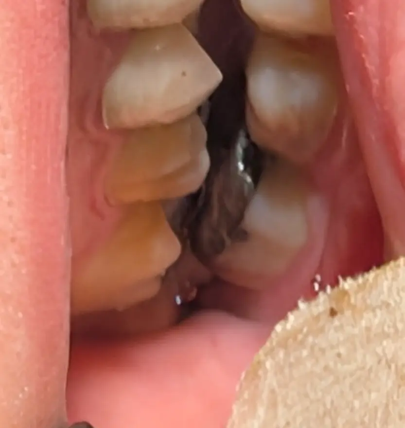

نسخه استخراجشده؛ ترجمه یا تأیید علمی انجام نشده است. وضعیت: captured
در این بیمار، فک در حرکات طرفی روی مولر سوم سوپرااِراپت کاملاً دیسکلود میشد. تداخلی واضح و از نظر کتابی یکی از بدترین نقاط تماس. اما نکتهی مهم این بود: بیمار هیچ علامتی نداشت. با این تداخل چه باید کرد؟

بیمار این علائم را نداشت:
سیستم فکی-عضلانی او با همین الگوی «غیرایدهآل» سالهاست پایدار مانده است.
در چنین شرایطی تجربهی بالینی میگوید هر الگوی «غیرایدهآل» لزوماً بیمار نیست؛ گاهی بدن راه خودش را پیدا کرده. «غیرایدهآل» توصیف هندسه است، نه تشخیص بیماری.
بله؛ اگر دندان عقل کشیده میشد، تداخل حذف میشد. اما هدف در اکلوژن «کتابی کردن» نیست؛ جلوگیری از ایجاد مشکل بیدلیل است.
میتواند بیمار بیعلامت را تبدیل کند به:
برگشت از این آگاهی، بسیار سختتر از رها کردن سیستم پایدار فعلی است:
با توجه به:
بهترین طرح درمان: عدم مداخله.
گاهی بهترین درمان، درمان نکردن است. اگر کار میکند، بگذار کار کند؛ جملهای که پشتش نه تنبلی، که ارزیابی کامل ایستاده است.